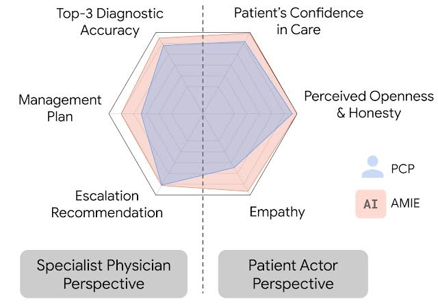

Google has now developed an AI that exceeds human doctors in its ability to correctly conduct medical diagnosis.
Thanks to Google, we now have clearly superhuman AI at medical diagnosis.
It’s so good that clinicians do worse when assisted by the AI compared to if they just let the AI do its job.
Articulate Medical Intelligence Explorer: A research AI system optimized for diagnostic reasoning and conversations
Paper 1:
Paper · Nature · 2025Towards conversational diagnostic artificial intelligenceAt the heart of medicine lies physician–patient dialogue, where skillful history-taking enables effective diagnosis, management and enduring trust 1,2 . Artificial intelligence (AI) systems capable of diagnostic dialogue could increase accessibility and quality of care. However, approximating clinicians’ expertise is an outstanding challenge. Here we introduce AMIE (Articulate Medical Intelligence Explorer), a large…nature.com
Paper 2:
Paper · Nature · 2025Towards accurate differential diagnosis with large language modelsA comprehensive differential diagnosis is a cornerstone of medical care that is often reached through an iterative process of interpretation that combines clinical history, physical examination, investigations and procedures. Interactive interfaces powered by large language models present new opportunities to assist and automate aspects of this process 1 . Here we introduce the Articulate Medical Intelligence…nature.com
In the first paper, AMIE matched or exceeded primary care physicians in a study of simulated text-chat medical consultations with validated patient actors.
The second paper evaluated AMIE’s ability to generate a differential diagnosis alone or as a clinician aide. The authors looked at 303 challenging, real-world medical cases. AMIE outperformed clinicians, and clinicians assisted by AMIE showed improved performance.

